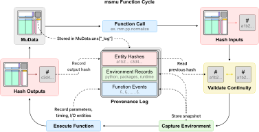
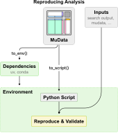

Provenance
msmu records supported public calls in mdata.uns["_log"]. The history travels with the
MuData object and its .h5mu file; no sidecar files are created. This replaces _cmd.
Existing _cmd content is neither read nor migrated.
This page describes the _log / mm.pv / mm.dt API of this source revision.
Older releases using _cmd do not expose this API. If your installation lacks mm.pv, use the
development installation when following these docs.
Keep old files for reference and rerun their original workflows to create new _log histories.
Use mm.pv for provenance and mm.dt for recorded data manipulation.
import msmu as mm
mdata = mm.read_diann("report.parquet")
mdata = mm.pp.log2_transform(mdata, modality="psm")
log = mm.pv.get_log(mdata)
last = log["events"][-1]
print(last["function_path"], last["parameters"])
print(log["environments"][last["environment_id"]])
mdata.write_h5mu("analysis.h5mu")
loaded = mm.read_h5mu("analysis.h5mu")
get_log returns a detached dictionary. Editing it does not alter the stored history.
Events are ordered by lineage sequence, then UTC start time (UUID breaks ties); parents and head identify
branches explicitly. Reading with mm.read_h5mu preserves the stored history and adds a
read event. Native mudata.read_h5mu preserves the stored history without adding an event.

The input and output hash steps apply when hashing is enabled.
Recorded information
Each event includes a UUID, function name and qualified path, UTC start/end times, elapsed
computation time, parameters including defaults and input descriptors, an environment ID, output descriptors, and parent event IDs.
Only successfully completed calls create events. Events have neither status nor error;
hash entries retain their separate status.
Scalar parameters, strings, mappings and sequences are not truncated. Data objects (including
MuData, AnnData, pandas objects and arrays) are represented in parameters by their type
and hash, including nested arguments. MuData references also contain source_event,
identifying the event that produced the input. Equal hashes do not imply equal histories.
Each input descriptor is stored only in parameters; new events have no inputs field.
Hashing runs once per input. Previous logs with a separate inputs list remain readable.
Other option values and defaults are kept.
Input/output descriptors contain IDs, roles, types and optional hashes, without shape, column
or dimension summaries. File and URL parameters contain their readable path, type and hash. Unsupported parameters and callables are described
and marked non-replayable. Function objects are not pickled or executed from the log.
Entities have independent UUIDs and argument/return roles. Input descriptors and hashes are
captured before computation, including for in-place mutations. A new observation receives
a new entity ID even when its content hash matches an earlier observation. Parents identify
inherited history, not proof that no unrecorded edits happened between calls.
With hashing enabled, the decorator compares each input MuData hash with its head event's
MuData output hash before executing the function. A mismatch logs an msmu WARNING and execution continues. Python warning filters do not affect this message. This reuses the input hash; no additional full-data hash is calculated. Comparison
is skipped when hashes are unavailable/disabled, algorithms differ, or the previous event
has multiple MuData outputs whose ownership cannot be resolved.
Returned MuData objects receive the history. For tl.run_de, the history stays on the input
MuData, with a descriptor and optional hash of the returned DeaResult's instance fields.
Failed calls propagate the original exception without adding an event or changing existing
history. Changes made to data before failure are not rolled back and are not logged.
Invalid pre-existing _log structures are rejected before computation; a failure while
saving a completed event emits a warning and preserves the computation's return value.
Nested decorated calls are represented by one outer public event. This avoids duplicate
records and repeated full-data hashes for internal implementation steps. Independent branches
keep separate histories; merging MuData combines histories by event ID without duplicating
shared ancestors. Logs are copied independently from data, including functions that copy
.uns shallowly. Console output and Python or msmu logging messages are not captured or
stored in events. msmu displays INFO and higher messages by default.
Independent calls are not serialized by a global lock. Concurrent mutation of the same
MuData object is not supported.
Hashing policy
The msmu-v1 policy normalizes floating-point values to 12 significant digits
when computing hashes. Stored values and analysis calculations are unchanged.
Files, identifiers/axes, strings, integers, booleans and numeric dtypes remain exact.
Sparse matrices stay sparse; floating-point scratch buffers are processed in chunks.
mm.pv.set_options(hashing=True)
digest = mm.pv.compute_hash(mdata)
Completed data hashes record normalization="msmu-v1". Replay and generated
scripts use the recorded policy to verify inputs and outputs.
Floating-point normalization uses quantization: values on opposite sides of a rounding boundary can produce different hashes. Hash agreement reflects equality under this policy rather than bitwise identity.
Content hashes
Hashing defaults to on. Set hashing=False to disable it; environment and execution records remain enabled.
# Persistent setting in the current execution context:
mm.pv.set_options(hashing=True)
print(mm.pv.get_options()) # {"hashing": True}
mdata = mm.pp.log2_transform(mdata, modality="psm")
mm.pv.set_options(hashing=False)
# Or enable hashing for a block and restore the previous setting afterwards:
with mm.pv.options(hashing=True):
mdata = mm.pp.scale_data(mdata, modality="psm")
last = mm.pv.get_log(mdata)["events"][-1]
print(last["parameters"]["mdata"]["hash"])
# Explicitly hash the current state without recording an event:
current_hash = mm.pv.compute_hash(mdata)
A hash entry has status disabled, completed, or unavailable. Completed entries include
the algorithm (sha256), digest and hash duration. Unsupported types or
unreadable inputs produce unavailable with a reason; these must never be interpreted as
matching content. Explicit compute_hash calls raise an exception for unsupported content.
The MuData hash covers global and modality obs, var, aligned mappings, uns,
MuData axis maps, AnnData .X, named layers and .raw. Only each object's _log is excluded.
Numeric dtype, shape, values, axis labels/order, and metadata affect the digest. Numeric
arrays use canonical byte order and NaN payloads. Sparse arrays are copied to canonical CSR,
with sorted/combined entries, without densification. Explicit zero entries remain meaningful;
sparse and dense representations are distinct. Unordered categorical columns hash by values,
normalizing h5mu's automatic string-to-category conversion. Unused unordered categories and
the string storage backend are intentionally ignored; ordered categories retain order metadata.
When PyArrow is available, pandas string arrays and string categories emit the same framed
UTF-8 byte stream in batches using Arrow kernels, avoiding per-value Python conversions.
Chunk boundaries and slice offsets do not affect the digest. The scalar fallback remains
available without PyArrow; existing hash values and the covered data are unchanged.
Path objects and strings in file/path arguments are input file entities. Existing files
are streamed in 1 MiB blocks when hashing is enabled. HTTP(S)/FTP URLs retain their original
address. Shared tabular readers download each URL once per logged call into BytesIO, then
give the same seekable buffer to Polars or pandas. With hashing enabled, provenance hashes
those downloaded bytes, using the same file-content encoding as a local file. No second
download or disk file is needed. URL input hashes are finalized after the reader has consumed
the source; URLs not consumed through this shared loader remain unavailable.
Download buffers are retained until the logged call finishes and are closed on success or failure. Peak memory can include all downloaded source bytes plus parsed tables. This is a full download, not a remote partial-read optimization. Hashing off skips hash calculation but uses the same loading path. Directories and unavailable files are not recursively fetched. Other implicit external dependencies are outside the captured inputs. Hashing is proportional to covered content and allocates sparse copies and any required canonical arrays. It does not create checkpoints or data snapshots.
Execution environment
Identical environment records are stored once and referenced by ID. Records include Python
version/implementation, OS release and architecture, names and versions of all installed
Python distributions visible to the running interpreter (including indirect dependencies), an available
msmu checkout commit/dirty flag, NumPy error settings, numerical threadpool details when
available, and an allowlist of numerical thread/hash-seed environment variables. Arbitrary
environment variables, credentials and host/user identifiers are not collected.
Package/source metadata is a snapshot cached on the first recorded call in a Python process; restart Python after changing installed packages or source code. Threadpool and numerical settings are sampled on each call. Unavailable metadata is explicitly marked. Seeds supplied as function arguments are recorded, but hidden RNG state, GPU state, package binaries and complete environment reconstruction are not guaranteed.
Coverage and interpretation
Automatic recording covers existing preprocessing and PCA/UMAP/correlation calls, plus
split_tmt, import readers including DELPI/h5mu, io.add_quant, dt.concat, tl.run_de,
tl.compute_precursor_isolation_purity, and the MuData helpers reindex_obs, attach_fasta,
map_fasta, and select_repr_protein. The normalize alias uses the normalise event.
Plotting functions (pl.plot_*) do not record provenance events or calculate provenance
hashes. Analysis operations such as PCA and UMAP remain recorded; rendering their results
does not add a processing step. Figures and their display settings are not stored in the log.
Existing logs containing plotting events are not automatically rewritten and remain
unsupported by replay.
Export functions (io.to_readable, io.write_csv, io.write_flashlfq_input, and
io.write_pin) do not log events or calculate hashes. write_pin requires an output
filename and returns None.
Standalone DataFrame readers, pl.plot_volcano, standalone mzML purity calculation, scalar
utilities, configuration functions and direct pandas/NumPy/MuData edits are not automatically
recorded. They either have no MuData storage target or are outside processing history.
User functions accepting or returning MuData can opt into the
same boundary using @mm.pv.log.
Use dt.map when the values already exist in another table:
mdata = mm.dt.map(
mdata,
source="psm.varm.search_result",
target="peptide.var",
source_index="Modified.Sequence",
target_index=None,
columns={"Protein.Group": "protein_group"},
)
source_index and target_index select matching columns; None uses the
corresponding table index. Neither changes the actual index. Table paths accept
global obs/var, modality obs/var, and DataFrames in modality obsm/varm.
Identical source key/value rows are collapsed; conflicting values for a key
raise before assignment. Unmatched targets receive missing values, and existing
target columns are overwritten. Only the mapping instructions are recorded;
replay and generated scripts obtain the values from the reconstructed source table.
Value conversions can also be recorded as compact rules:
mdata = mm.dt.replace(
mdata,
target="peptide.var",
columns={"peptide_type": {True: "unique", False: "shared"}},
)
This uses pandas-style replacement dictionaries and the same table paths as
map. Unmatched values and missing values remain unchanged unless
explicitly included in the rules. Nullable booleans and categorical columns are
converted to object dtype when needed to hold the replacement values. Replay
and scripts store the rules, not the resulting columns.
Delete an unstructured metadata entry with a recorded location:
mdata = mm.dt.drop(mdata, target="psm.uns", key="decoy")
This is equivalent to del mdata["psm"].uns["decoy"] and returns the same
MuData. target="uns" addresses global metadata. Missing keys raise KeyError;
the _log provenance key cannot be deleted through this function. Only the
target and key are recorded, not the deleted content. Replay reconstructs the
preceding state and then repeats the deletion.
Use dt.assign to record an explicit column assignment with supplied values:
mdata = mm.dt.assign(mdata, "protein_group", protein_groups, modality="peptide")
# Equivalent to mdata["peptide"].var["protein_group"] = protein_groups
This changes the supplied MuData in place and returns it. on="obs" assigns an
observation column instead of a feature column. Pandas handles broadcasting and
index alignment. Scalars, lists, NumPy arrays, pandas Index and Series values are
stored in full, including Series indices and dtypes, so replay can repeat the
assignment without repeating the calculation that produced the values. Large
columns increase the log size. Arbitrary Python objects and MultiIndex values
are unsupported; AnnData's usual column storage restrictions still apply.
The model follows the core concepts of W3C PROV-DM:
msmu log entry |
PROV interpretation |
|---|---|
| A function execution | Activity |
| An observed input/output state | Entity |
| Execution consuming an input entity | Usage (used) |
| Successful execution producing an output state | Generation (wasGeneratedBy) |
msmu software identity plus environment reference |
Software agent and execution context |
The stored representation is msmu's versioned JSON schema, not PROV-JSON/RDF interchange,
and does not claim PROV constraint validation or FAIR certification. History and hashes
support auditing observations. They do not reconstruct arbitrary pandas edits, store original
data or prove computational reproducibility. Supported histories can be rerun with
mm.pv.replay as described below.
Replay
mm.pv.replay reruns a single MuData chain from its original input files:
# The original mdata is not modified. The result contains newly recorded events.
replayed = mm.pv.replay(mdata)
# A decoded history is also accepted. Supply new locations if files moved.
replayed = mm.pv.replay(
mm.pv.get_log(mdata),
sources={"old/report.parquet": "data/report.parquet"},
)
# Explicitly opt out of verification for histories recorded without hashing.
replayed = mm.pv.replay(mdata, verify=False)
By default, every recorded input/output must have a SHA-256 hash. Replay checks source content before each call and checks each returned MuData against its recorded output hash. It reuses output hashes produced by the logging decorator. A mismatch stops replay; partial results are not returned. URL verification and reading share one in-memory download per call. Source replacements only change paths, not the expected hashes. If a reader stores source locations as data metadata, relocating a file can also change its output hash.
Replay validates the complete event graph before executing any processing function. It resolves
only public, decorated msmu functions and never imports arbitrary function paths from the log.
Each root must be a file reader. Other calls take one direct MuData argument, or a
dt.concat dictionary with string dataset names, and return one MuData. Parent links
determine execution order; parameter references bind inputs to their producing events.
The deprecated merge_mudata alias warns and delegates to dt.concat; old logs using
that name remain replayable and generate mm.dt.concat calls.
Shared ancestors execute once. Inputs used by multiple calls are copied to isolate branches,
and intermediate results are released after their last consumer. This can require more memory
than a linear workflow. Known gaps
between a recorded output hash and the next input hash are rejected even with verify=False:
the missing operation cannot be inferred from the history.
Current limits:
- Intermediate
read_h5mucalls, other nested MuData arguments, non-MuData returns (includingrun_de), and plotting calls are unsupported. - Older linear histories without parameter references remain supported. Older merged histories require uniquely matching parent-output hashes; ambiguous inputs must be recorded again. A hash identifies content, not a stored copy of the data.
- Data-valued arguments such as an in-memory SDRF DataFrame are not reconstructible;
use a file-backed argument when recording a workflow intended for replay.
dt.assignexplicitly captures itsvaluesargument and is an exception. - Basic values, mappings, lists and serialized dates/non-finite floats can be restored. Tuples and sets were normalized to lists by the logger; their original container type cannot be recovered. Callables and parameters marked non-replayable are rejected.
- PCA and UMAP require an explicitly recorded integer
random_state(PCA defaults to 0). - Environment differences are logged as
msmuwarnings. Packages and source code are not restored; a dirty source snapshot cannot identify the exact original code. Hash agreement checks recorded content, not every aspect of computational reproducibility.
verify=False reruns without hash comparison or fresh hash calculation. It does not make
unsupported history replayable. Replay stores no sidecar files and restores the caller's
hashing option after execution or failure.
Generate a replay script
script = mm.pv.to_script(mdata)
print(script)
# Or save directly as a UTF-8 Python file. Returns None.
mm.pv.to_script(mdata, filename="workflow.py")
# Paths can be replaced when generating the script.
script = mm.pv.to_script(
mm.pv.get_log(mdata),
sources={"old/report.parquet": "data/report.parquet"},
)
Generated scripts enable hashing once at startup with mm.pv.set_options(hashing=True),
including when verify=False; that flag only skips comparison with recorded hashes.
The setting remains enabled in the execution context.
to_script returns Python source text when filename is omitted. With filename,
it writes the script, overwrites any existing destination, and returns None.
It does not download inputs or execute the workflow. Original files need not exist until the script runs. The script
omits recorded execution timestamps and hash durations. It
contains explicit public msmu calls with recorded defaults and leaves the final result
in mdata. It requires msmu and imports its internal replay/source helpers, so retain
its matching msmu version when sharing the script.
At execution, it warns about environment differences, verifies each source before reading, and checks each output using the new provenance event's hash. URL downloads are shared with readers; output hashes are reused rather than computed twice. A hash mismatch raises an exception and stops execution. Hashing remains enabled even on failure. Editing processing parameters may intentionally cause an output mismatch.
The same workflow restrictions as replay apply, including rejection of known
unrecorded changes. For histories without hashes, explicitly use verify=False to
generate calls without source/output hash checks. Environment checks still run.
Export the recorded environment
Export the Python/package versions embedded in a result without inspecting the current environment or running the analysis:

# uv-compatible requirements.txt:
mm.pv.to_env(mdata, "requirements.txt", format="uv")
# Conda environment.yml (Python and pip from conda-forge, Python packages via pip):
mm.pv.to_env(mdata, "environment.yml", format="conda")
# Omit filename to return text, as with to_script(). Decoded logs also work.
text = mm.pv.to_env(mm.pv.get_log(mdata), format="uv")
The export supports recorded CPython environments. It pins every recorded Python
distribution, including indirect dependencies and any unrelated installed tools.
It does not require recorded hashes, accessible input files, or a replayable workflow.
With filename, it overwrites that destination and returns None; otherwise it
returns text. Export does not install anything or change the MuData/history.
For uv, use the Python version in the generated file's Create comment:
# Replace 3.12.8 with the recorded version printed in requirements.txt.
uv venv --python 3.12.8 .venv-replay
uv pip sync --python .venv-replay requirements.txt
For conda:
conda env create --name msmu-replay --file environment.yml
conda activate msmu-replay
These use uv's requirements-file support and conda's pip dependencies.
By default, all environments referenced by the history must agree on Python,
package versions, OS/architecture, and msmu source. Differences only in numerical
or thread settings are preserved in comments. If installation environments differ,
export rejects the ambiguous history and lists IDs for explicit selection:
log = mm.pv.get_log(mdata)
print(log["environments"].keys())
text = mm.pv.to_env(log, environment_id="<recorded ID>")
Selecting one environment does not make it sufficient for every step recorded in
another environment. Reading with native mudata.read_h5mu avoids adding the current
machine's environment as a new msmu read event before export.
These exports are version specifications, not complete environment lockfiles.
The log does not capture package-index URLs, VCS/local/editable installation sources,
wheel hashes, conda channels/builds, or non-Python dependencies. The conda export
therefore uses pip for recorded Python distributions rather than guessing conda
package names. Installing a pinned package requires it to be available from your
configured sources on the target platform. In particular, a development/private
msmu build may need its matching source or wheel supplied separately.
Recorded context, including msmu commit/dirty status and runtime settings, is included
as comments. Uncommitted msmu changes emit a warning because version pins cannot
restore them. OS, native libraries, NumPy/thread settings and source edits must be
handled separately. After preparing the environment and original inputs, use verified
replay to check the recorded outputs; export alone does not establish reproducibility.
Storage
_log contains schema_version, head, events, and environments. Events and environments
are dictionaries from IDs to JSON strings. This avoids h5mu restrictions on heterogeneous
lists, missing values and user parameter names. get_log decodes those strings on demand.
No write/load monkey-patches or additional file formats are required.